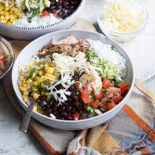

Homemade Chipotle

Description
In case you don't want actual chipotle and want to make it at home instead
Ingredients
- corn
- tomatoes
- bagel seasoning
- avocadoes
- black beans
- rice
- teriyaki sauce
- butter
- tuna
- mayo
- iceberg lettuce
- cilantro
- chicken
- onions
Steps
- dice tomatoes
- mix tomatoes, cilantro, onions in a bowl and stir
- add bagel seasoning to the above mix and keep stirring until you like the taste
- smash avocadoes until you get guac
- mix together canned tuna and mayo
- put cooked rice on frying pan and melt butter on top and cook
- add teriyaki sauce and keep stirring rice
- cook chicken
- slice up the iceberg lettuce
- in a bowl, layer rice first
- layer tomato, cilantro, onion mix
- next layer, put chicken, tuna and guac
- final layer put iceberg lettuce